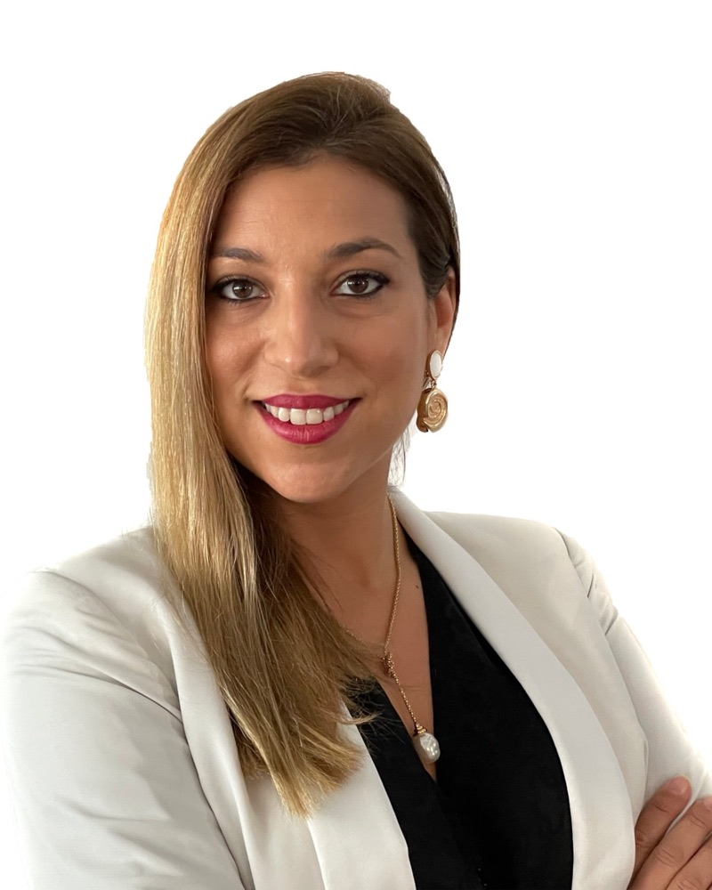
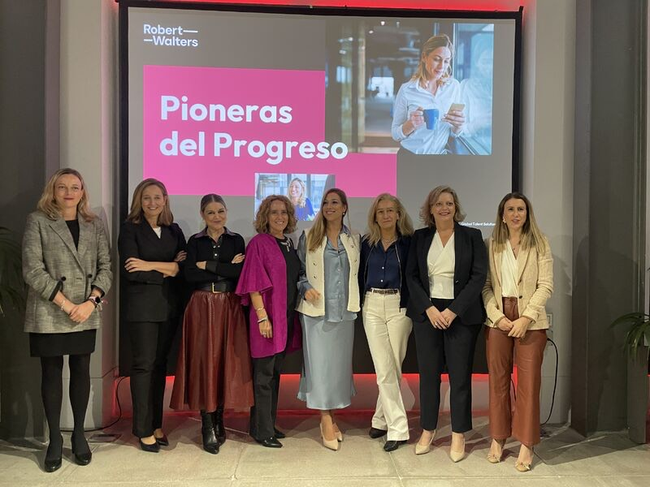
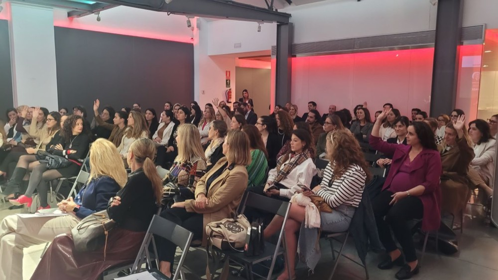
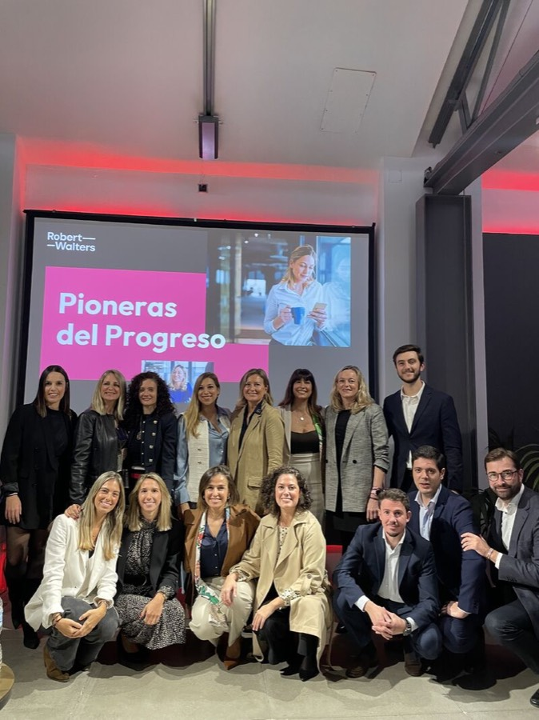
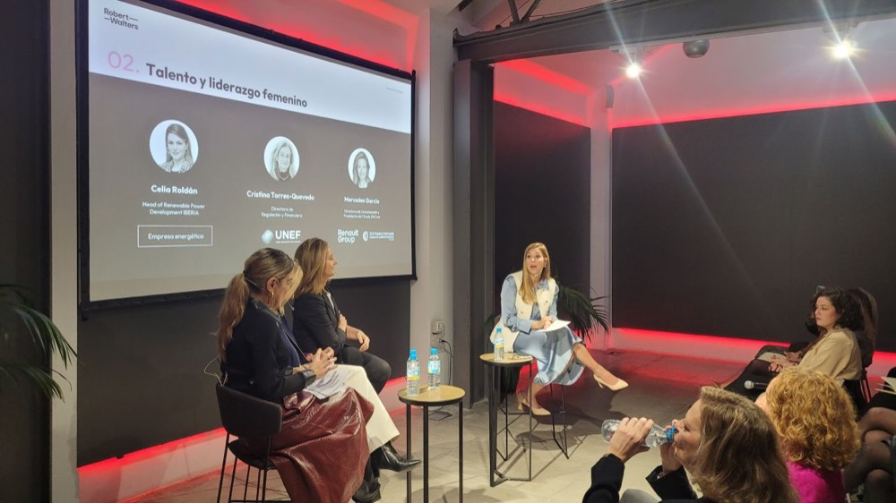
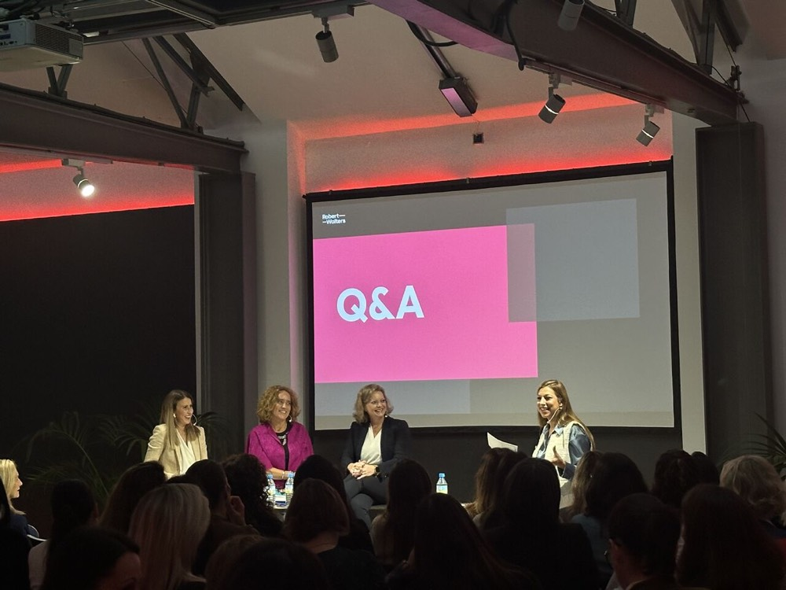
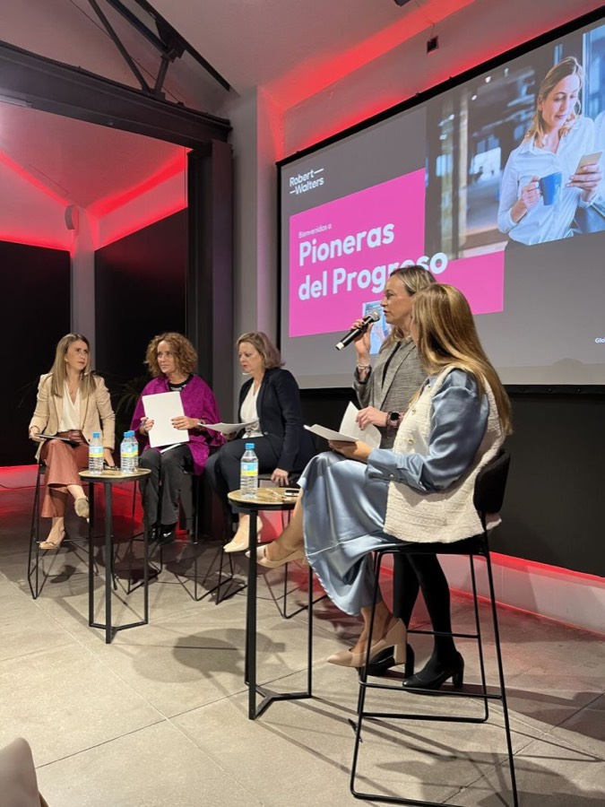

Soy Laura Galera San Miguel y dirijo la División de Ingeniería, Energía e Industria de Robert Walters en Madrid. Desde hace más de 13 años, mi equipo y yo seleccionamos a los directivos y especialistas que necesitan las empresas del sector, en España y a nivel internacional.

«Un servicio de alta calidad mediante la ultraespecialización y el conocimiento del mercado.»
Soy Ingeniera Industrial, especialidad en Organización Industrial, por la Universidad Carlos III de Madrid, y dirijo la División de Ingeniería, Energía e Industria como Associate Director en Robert Walters.
Desde 2012 me dedico a la selección de cargos directivos y especialistas: desde mandos intermedios hasta CEO y Director General, en procesos nacionales e internacionales. Junto a mi equipo, he cerrado más de 817 posiciones.
Lidero un equipo de alto rendimiento de 13 consultores, todos ellos ingenieros de formación. Hablamos el mismo idioma que las empresas y los profesionales con los que trabajamos: entendemos cada puesto, cada proyecto y cada mercado desde dentro.
Tres principios que guían cada búsqueda, de la primera conversación a la incorporación.
Trabajo exclusivamente en Energía, Ingeniería e Industria. Esa profundidad permite identificar y evaluar a los perfiles adecuados con precisión.
Más de 13 años siguiendo de cerca la evolución del sector: de las renovables al hidrógeno verde, pasando por Oil & Gas y T&D.
Un equipo formado íntegramente por ingenieros, capaz de valorar la experiencia técnica de cada candidato con la mirada de un colega.
Headhunting especializado en los sectores que impulsan la transición energética y la industria.
Fotovoltaica, eólica, termosolar, hidráulica y biomasa.
Energía convencional y nuevos vectores energéticos.
Redes eléctricas, subestaciones e infraestructura de T&D.
Ingenierías, industria y perfiles técnico-comerciales (Sales Industry).
Operaciones, cadena de suministro y movilidad.
Mandos intermedios, directivos, CEO y Director General.
De consultora especializada a dirigir la división, siempre en el mismo sector y con el mismo compromiso con la calidad.
Energía, Ingeniería, Industria, Transporte y Logística. Dirección de un equipo de 13 consultores y procesos Executive (CEO y Director General) a nivel nacional e internacional.
Energía (EERR, Oil & Gas, Hidrógeno Verde, T&D) y Sales Industry.
Renewable Energy and T&D. Selección de mandos intermedios y directivos en energías renovables.
Renewable Energy and T&D.
Renewable Energy, Oil & Gas and Engineering.
Artículos, informes y estudios sobre el mercado de talento en Energía e Industria.
Artículo firmado por Laura Galera sobre el sector de las Energías Renovables.
Leer artículo Informe · Robert WaltersInforme de la división de Energías Renovables de Robert Walters.
Ver informe Estudio · Robert WaltersLas bandas salariales del mercado por puesto, sector y experiencia.
Consultar el estudio Robert Walters EspañaLa página de la especialización en Energía de Robert Walters España.
Visitar Noticia · Robert WaltersCrónica del evento organizado por Robert Walters y presentado por Laura Galera. Mayo de 2026.
Leer noticia LinkedIn · Laura GaleraLaura Galera sobre Pioneras del Progreso en LinkedIn.
Ver publicaciónEspecialidad en Organización Industrial · Universidad Carlos III de Madrid.
Estancia de un año y dos meses en Londres.
El encuentro anual que reúne en Madrid a las mujeres que lideran las grandes empresas de España.

Pioneras del Progreso es el evento de Robert Walters organizado y presentado por Laura Galera. Reúne en Madrid a CEO y directivas de compañías líderes de toda España para debatir sobre liderazgo femenino, talento y el futuro de sus sectores.
Nació como un espacio abierto de reflexión para cargos directivos en sectores donde la presencia masculina ha sido tradicionalmente mayoritaria, como la Energía y la Industria.
Imágenes de la I Edición · Espacio Unonueva, Madrid





Al trabajar con Laura, su empresa cuenta con toda la estructura de Robert Walters y con una división dedicada en exclusiva a Ingeniería, Energía e Industria.
Robert Walters funda la firma en Londres, centrada en sus inicios en la selección de perfiles contables y financieros.
Sale a cotizar en la Bolsa de Londres, con los estándares de transparencia de una compañía cotizada.
Publica su primer Estudio de Remuneración Global, hoy una referencia anual en el mercado de talento.
Firma global de soluciones de talento en 31 países, con más de 3.600 profesionales y oficinas en Madrid, Barcelona, Valencia y Bilbao.
Cuénteme qué perfil necesita. Con mi equipo de Robert Walters encontraremos a la persona adecuada para su organización, en España o a nivel internacional.
Escribir un emailSi es ingeniero o directivo en Energía, Ingeniería o Industria y quiere explorar nuevas oportunidades, conectemos.
Conectar en LinkedIn